| The activities started to really happen this
month. We had a lot of nature action around the house in
Eureka. At the end of the month I took a very eventful trip to
Oklahoma to visit my family and attend the first of 3 Hootie & the
Blowfish concerts this year with my sister. |
|
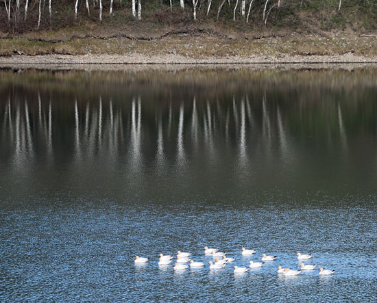 |
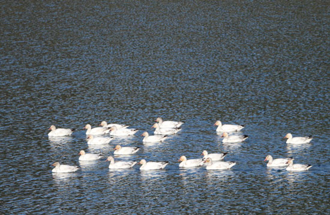 |
| A passing visit from a flock of white birds. | They only hung out at our lake for a few hours, but it was nice looking at them. |
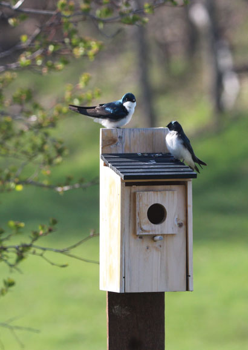 |
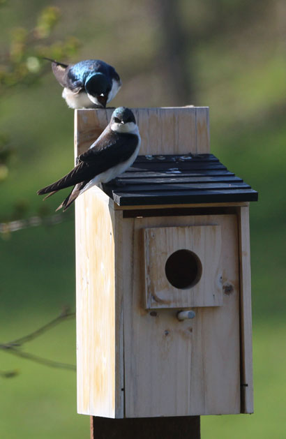 |
| Eric put up this bird house just outside my office window as a gift to
me. It has been so fun to watch this pair make a nest and raise their young there. |
This picture cracks me up. The male is yelling right at her but she
says, "Talk to the feathers..." - she ain't listening! |
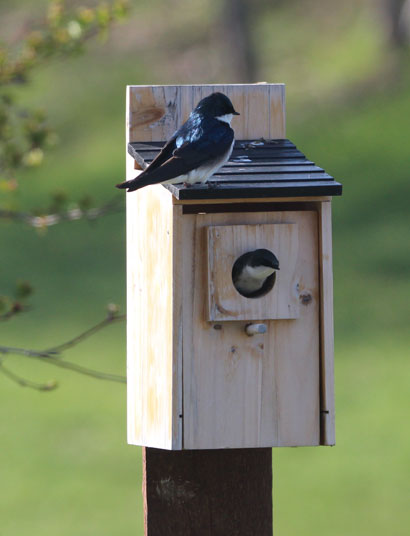 |
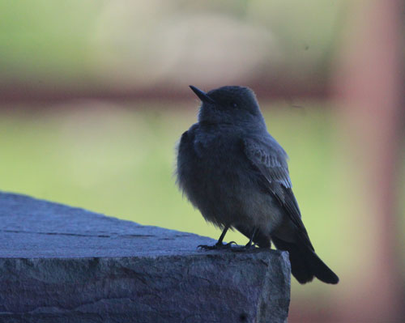 This adorable bird and it's family made a nest in the rafters directly
above our front door. |
| They were so cute, but they would divebomb us (and Buddy) if we got close to the bird house. |
|
|
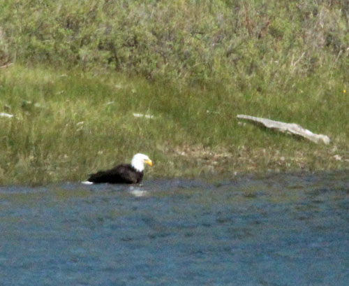 |
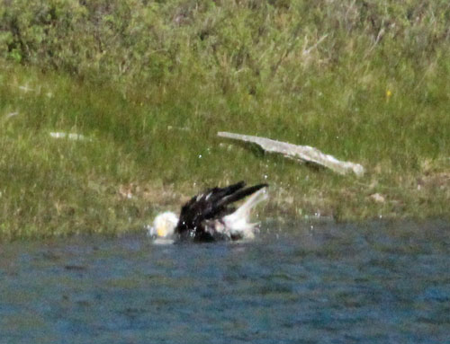 |
|
An eagle, taking a bath across the lake. |
|
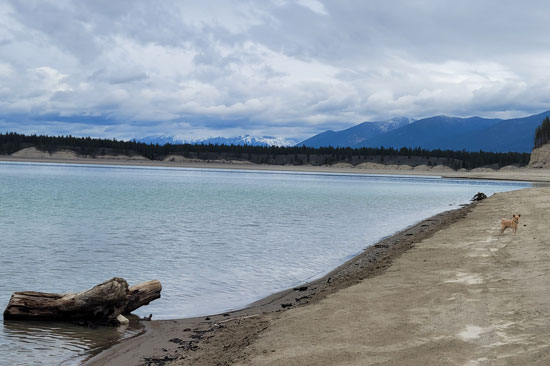 On a decent weather day, I took Buddy out to Lake Koocanusa for a sandy walk. |
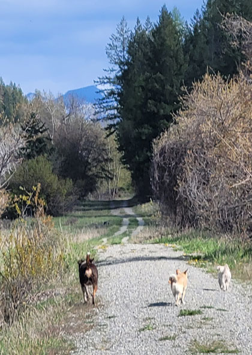 |
| Here we go on a LONG walk with Aunt Amy, Stryker, and Carson. We walked for about 2 hours. It was our first long outing of the year. |
|
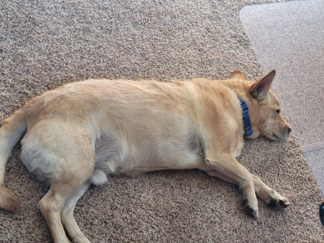 That poor dog was bushed afterward! It's been a long winter of inactivity up to now. |
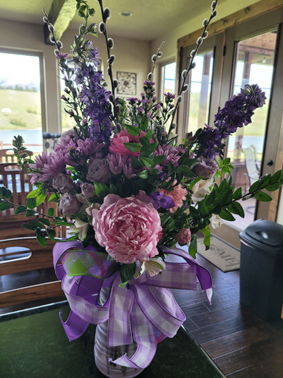 |
| My parents sent me some floral love this month, in the form of this beautiful bouquet. |
|
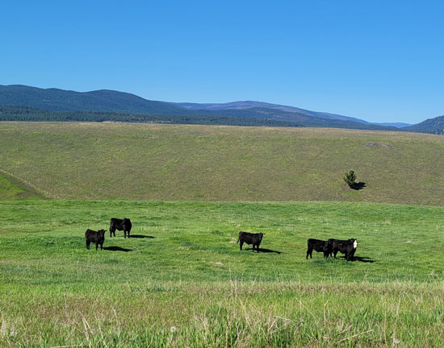 |
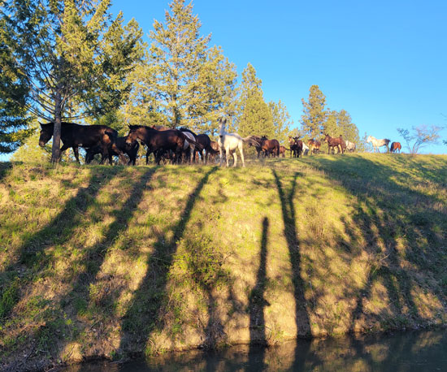 |
| Our steers, settling in nicely and growing quickly. | Strite & Kaitlyn's horses and mules, blazing trails and looking beautiful. |
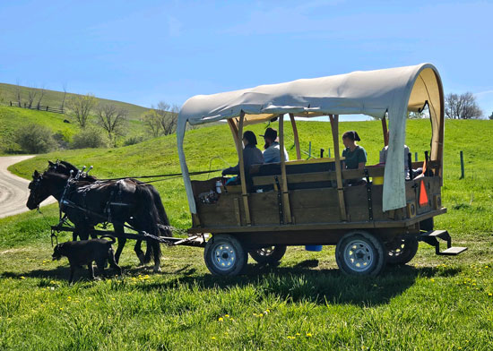 |
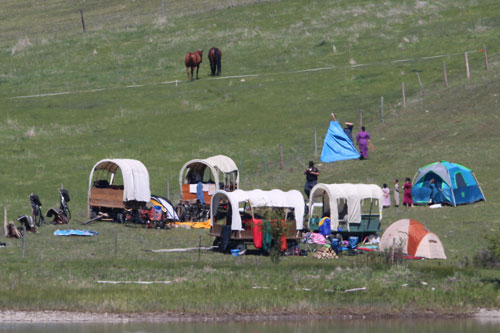 |
| Every May a group of Amish folks make the long wagon ride over from The West
Kootenai to spend a weekend camping on Dan & Rose's land near the lake. |
This was taken from our living room with a zoom lens. I didn't want to
be too intrusive, but it's a sight you don't get to see all that often! |
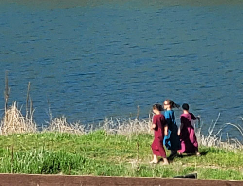 |
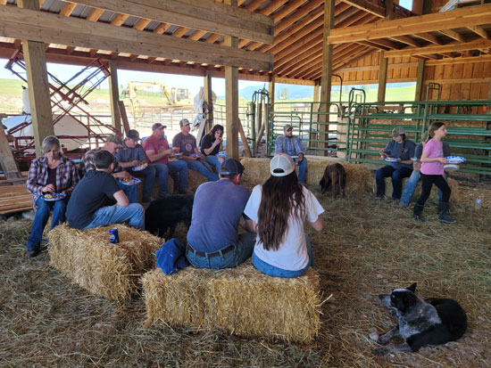 |
| The boys all fished and the girls took long walks. It was really cute. | Branding day was broken into two parts this year - half at the ranch and
half at Dan & Tracie's. I was too late to catch the part at the ranch, but I managed to get a burger from the 2nd one. |
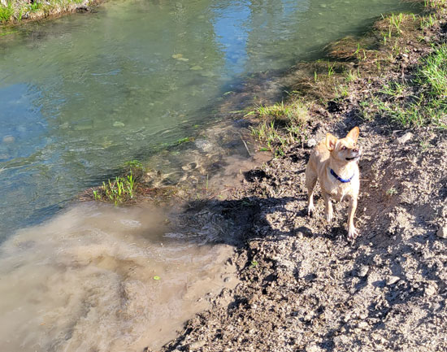 |
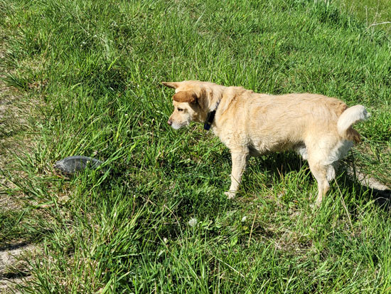 |
| Buddy is SO happy to be back to his favorite activity - chasing pebbles in the shallow water! | Turtles make him very nervous. Here he hesitantly checks one out. |
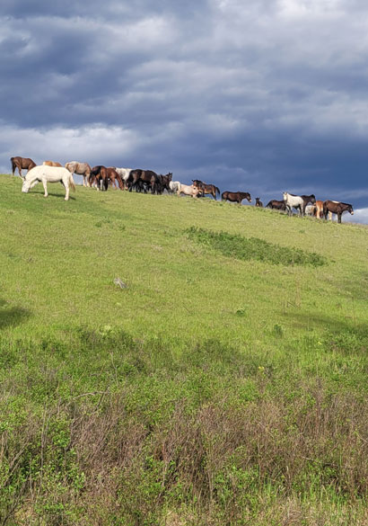 |
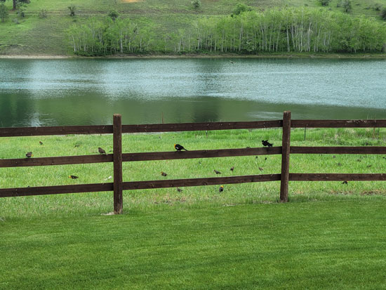 |
| The horses and mules, posing against a moody sky. | A brief visitation by a huge flock of yellow-winged black birds. |
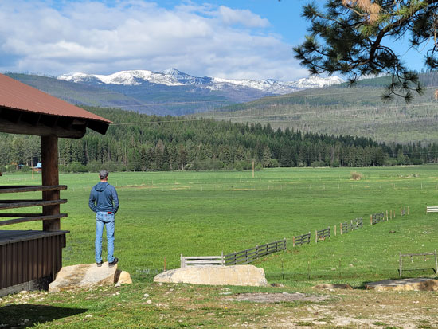 |
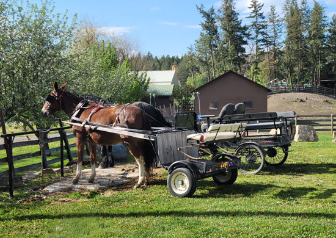 |
| One Saturday morning, we headed for The West Kootenai with Jeb & Amy to enjoy an Amish breakfast. | The parking lot includes all kinds of vehicles! |
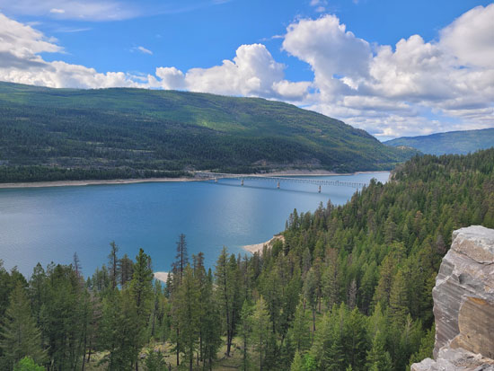 Stopping to sight-see and stretch our legs after we ate until we felt ill. |
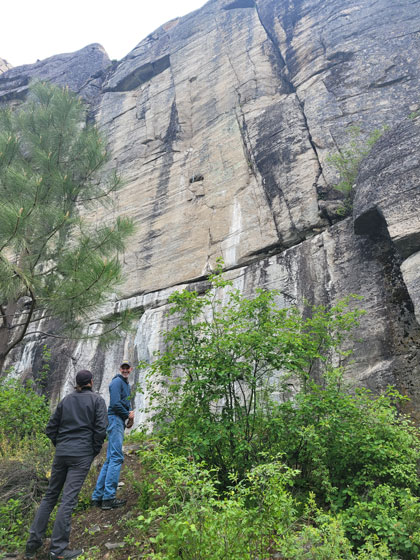 |
| Next stop, Stone Hill. We're admiring The White Wall, the new climbing area that Eric is developing. You only get that real smile out of him at the rock! |
|
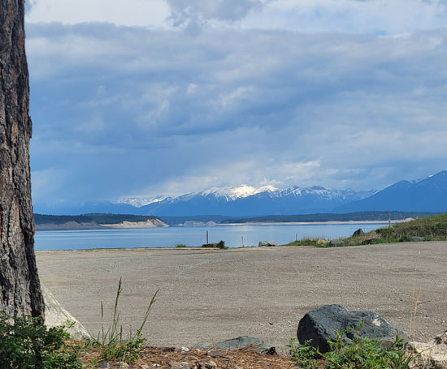 |
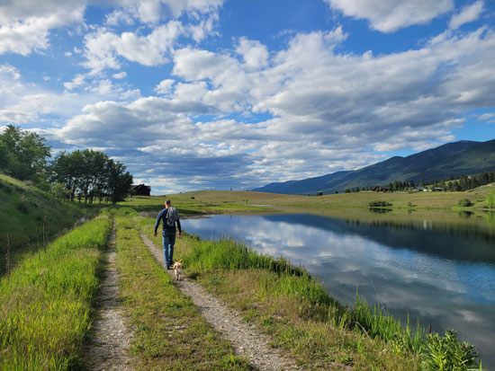 |
| Next stop, Abayance Bay. Canada was peeking out of the clouds that morning. | Back at home, enjoying our piece of paradise. |
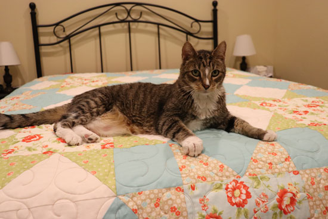 Rocket, helping me photograph one of my quilts. |
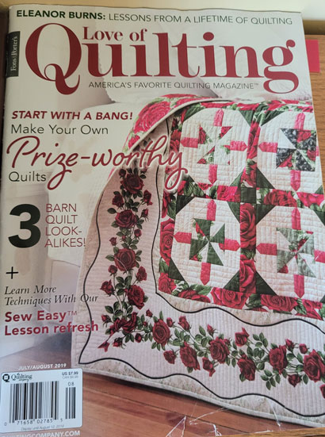 |
| In 2019, my friend and quilting idol, Lori Marvel, created this beautiful quilt that was featured on the cover of this quilting magazine. This year she decided to sell it, so I bought it! It's so beautiful. |
|
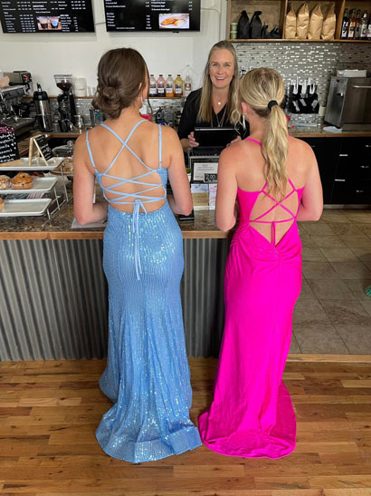 |
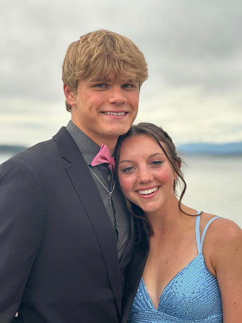 |
| Kristi hosted Aubrey and her friends at The Gathering Place so they could get ready for prom in our bridal suite area. They had a lot of fun! |
Kristi shared this picture with me of cousins Braden & Aubrey at
prom. No, they weren't each others' dates, it's just a picture of them together! |
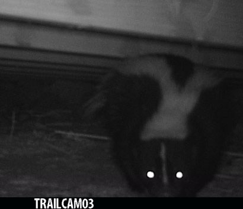 Adorable little face captured on our trail cam. |
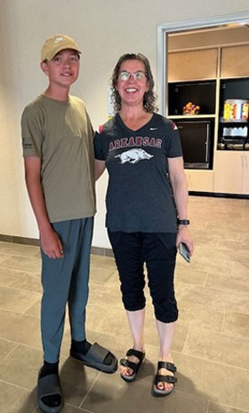 |
| And now, here I am in Oklahoma. Brodie has become taller than me since I saw him last! |
|
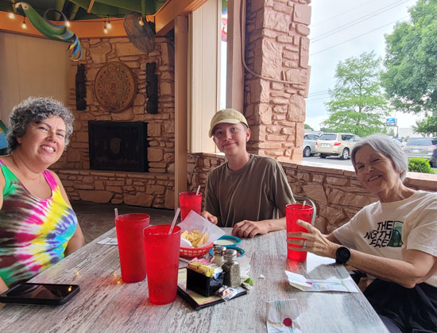 |
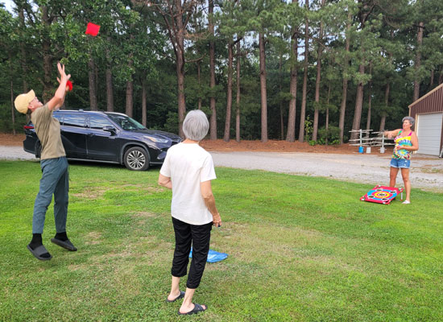 |
| Out for lunch in Tulsa. Brodie just loves having his picture taken. NOT! | Back in Westville, now we're enjoying lawn games in the back yard. |
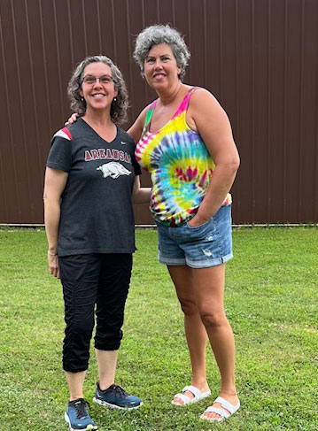 |
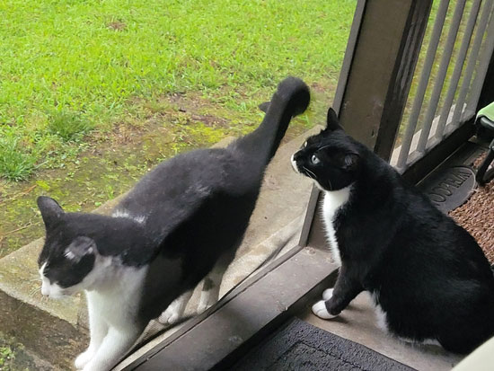 |
| Me & Desirae, Mom is happy to have us together with her again. | Patch tries to cop a sniff of Tom through the screen of her "catio". |
| 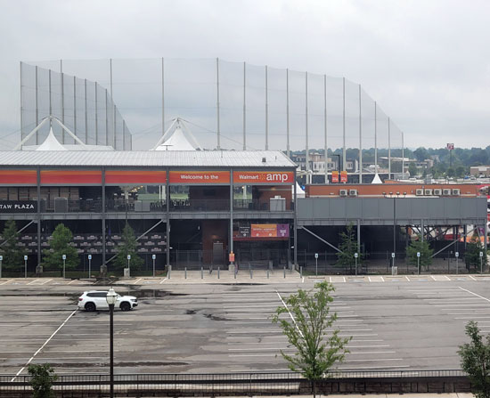 |
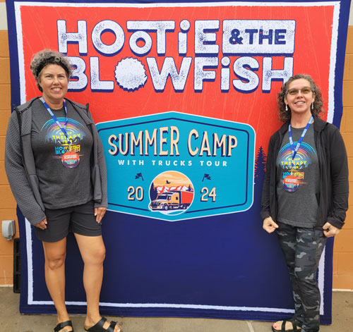 |
| Next we're off to Rogers, Arkansas for our first show of Hootie
& the Blowfish's 2024 tour. This is a view out of our hotel window - it provides excellent access to the show! |
Here we are in our matching 2019 tour t-shirts, ready for our VIP experience! |
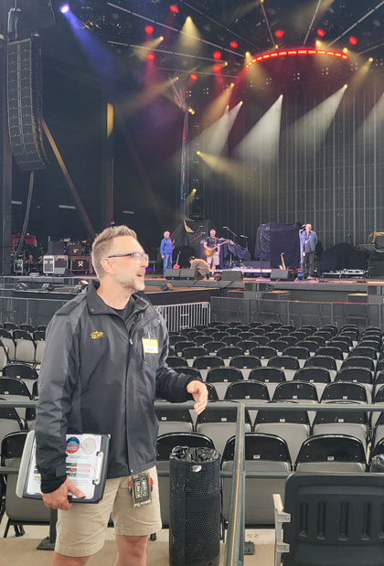 |
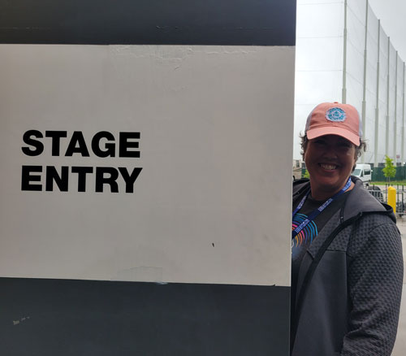 Backstage bound! |
| It's VIP Lee! He is the nicest guy in show business.
I gave him the pen wrap I made for him last month and he was so kind about it. |
|
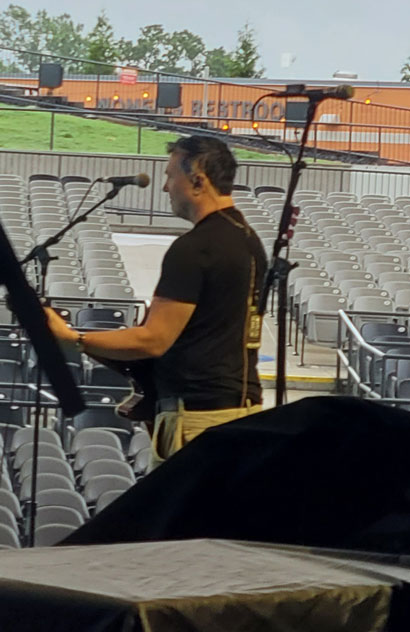 |
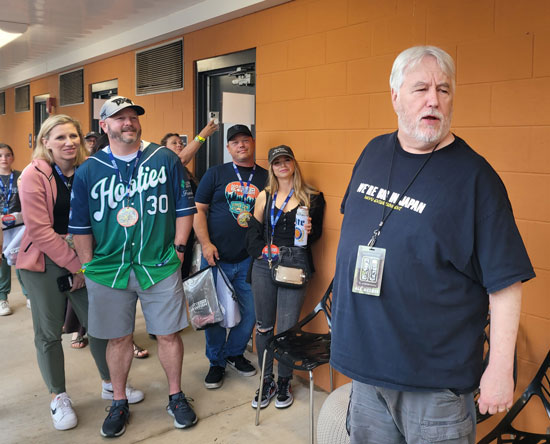 |
| We were crashing Edwin McCain's sound check, so we will come back later. | Erin & Eric Ripley on the left, tour manager Mike Kelly on the right. |
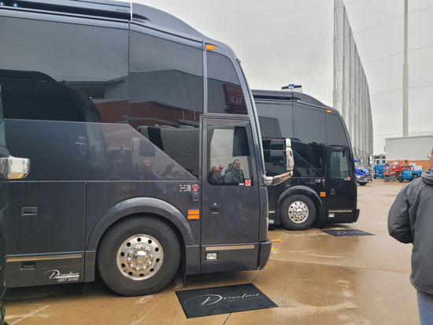 |
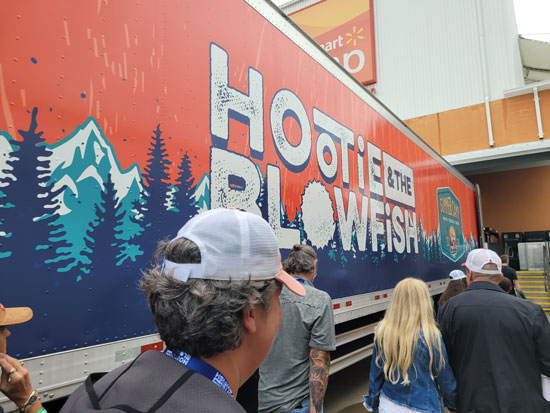 |
| Four fancy buses, one for each member of the band. | I've forgotten the stats on how many semi trucks it takes to haul their stuff, but it's a LOT! |
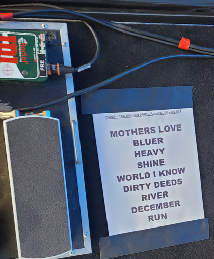 |
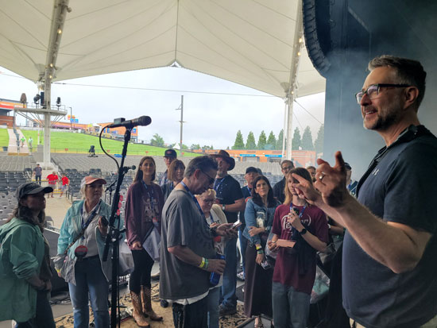 |
| On our backstage tour - the Collective Soul setlist, ready for action. | Lee started life as a middle school teacher, which prepared him perfectly for giving VIP tours! |
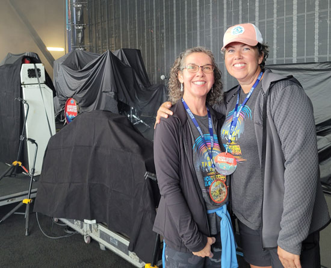 |
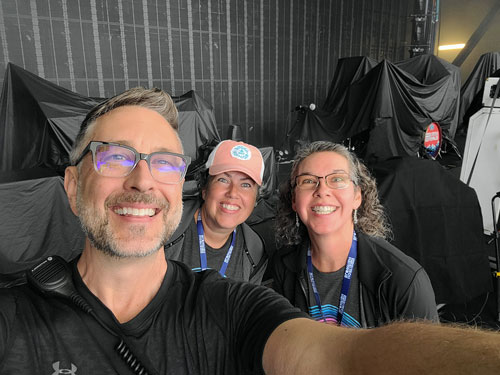 |
| On stage with my seester! | This would have been a great selfie with Lee if only I had control over my crazy eye. |
| "Camp Hootie" - the VIP hangout | They had a bunch of Hootie memorabilia in cases and scattered around "Camp Hootie" |
|
Using the provided Polaroids to document the occasion. |
There was a feast provided, it was good! |
|
|
I was supposed to act like I was paddling, but I didn't get it together fast enough. |
|
Enjoying the VIP scene - we could get used to this! |
|
| Sister photo, courtesy of our new friends Mario & Karen de Armas | Two members of Collective Soul came into the VIP tent in search
of drinks. The young man working the bar wouldn't give them one for free, so Desirae & I bought drinks for bassist Will Turpin (pictured here with us), and lead guitarist Jesse Triplett. |
|
The first act was Edwin McCain. He's always funny as well as talented. |
|
| I like to think we contributed to their awesome set that
night by providing a pre-show beverage. |
|
| I can remember listening to these guys in the 90's and saying,
"I wish I could see them live", as if it was an unattainable dream. Soon I'll have seen them 4 times in two years! |
They have some classic older songs and still keep on producing hits even now. |
|
|
One very fun part of the evening came when they informed us that the drummer's grandpa had attended the University of Arkansas. They got grandpa on a video call and had us call the hogs for him. Then the drummer wore a "Pigs" hat for a few songs. |
|
The highlight of their set was when Edwin McCain came out to
join them for "Dirty Deeds" (originally by AC/DC.) |
|
| The curtain is drawn to help build the anticipation for the main event - Hootie!! | Here they are - woo hoo! |
| Because we were on the backstage tour, we now know the lighting
effect you see here is extra special. They combined a light screen with a floodlight to give the lighthouse a realistic effect. |
The stage and lighting really were first class - which goes perfectly with the first class performance! |
|
All four guys came out front for an acoustic melody of 3 songs - Will the
Circle Be Unbroken, Desert |
|
| Bass player Dean Felber. This is as animated as he gets,
I totally identify with him! |
|
|
A professional shot of that part of a different night's show. |
|
| Me & Hootie - practically BFFs! :-) | |
|
A rousing accordion and violin interlude by Lee Turner and Garry Murray. We love Lee! |
|
| It's hard to get a good picture of Darius because he's always singing. | |
|
Edwin McCain came out to sing "Solitude" with the band.
He also had |
Hijinks & hilarity after the final bow. |
| TFJs! Mario & Karen de Armas, Desirae, me,
Erin Ripley, two ladies I don't know, and Eric Ripley
TFJ stands for "True Fan Johnson", which is the name for people who take being a fan of the band seriously. |
|
| The next day, Desirae & I enjoyed some shopping, then we
took a tour of my old college haunts. This is the square area in downtown Fayetteville. It's really lovely there. |
|
| Dickson Street Book Shop - Eric and I used to go there just to
goggle at the prices of the books. This guy is like the Book Nazi, "No books for you!" |
Dickson Street - a lot has changed, but it is still thriving. |
| Now we're doing a scooter tour of the U of A campus.
We found where my name is etched into the sidewalk, but I can't find |
My first time on an electric scooter - we're all amazed I came through unharmed! |
| One of my old apartments, we found another one too but didn't take a photo of it. | Powerhouse Seafood - This was a fancy restaurant when I lived
here. Eric and I splurged to go there once & we tried escargot. Now it's a derelict old ruin. And I don't need to have escargot ever again. |
|
Next we attended Westville's long-running regular event, "Cruise
Night". Turns out it sounded a |
|
| There are trails all through Fayetteville that are very scenic. | |
|
The fancy lighting still works, and the designs on the walls still looked pretty good. |
|
| A man has purchased the town movie theater and was opening it to
the public that evening. It had been closed for most of my lifetime so it was like stepping into a time capsule. |
|
| This was the air conditioner - it was quite fancy for it's time. | Looking up from the little stage area in front. |
| The projector room. Interesting and overwhelming in equal parts. | There are lots of movies just laying around like this. |
|
A cool weighted chain pulley system that they used for closing this door. |
|
| The projector. I hope he can sell these old things
on eBay and make some money to help him with this huge renovation project. |
|
| There are piles of these old playbills from the 60's & 70's | I've never seen pop dispensed this way! |
|
The big 3 in sugary drinks. |
|
| Or sold for these prices!! | |
| The standard popcorn bag is smaller than a child's size in today's movie world. | The next day was a lake day - we are in the pontoon and out to enjoy Lake Tenkiller. |
| Captain Brodie at the helm. PePaw has taught him well, he's great at handling the boat! | Cruising past Goat Island. I can find 8 goats in this picture - but there could be more! |
| The beautiful bluffs of Lake Tenkiller. We spent large parts of our summers here when I was a kid. | Desirae looks like she's thinking of taking us on a wild ride! |
|
We played a game where we threw these little gourds |
|
| Do you think she loves him just a little bit? :-) | |
|
|
|
|
The next day Mom & I went to Bentonville, AR to the Crystal Bridges Museum of American Art. This is a scale model of the facility. |
|
| There had been a tornado about 5 days before, so the walking paths were trashed. | |
| More of the area tornado damage. | One of the nicer pictures we saw. |
| This is art that Mom & I can get into - bright colors galore! | It was a tiny room, but there were so many mirrors it looked vast inside. |
| We toured the special exhibit, "Exquisite Creatures"
which used plants, animals, and minerals to create works of art. |
The brochure states that the specimens are sustainably
sourced. |
|
Beautiful beatles |
|
| The various kinds of camouflage was so neat to see. | |
|
|
|
| The close-up view of lizard hide was really amazing. | That evening I headed over to the KB Ranch to hang out with the
Bloomers.
Here Chewy, the pony-sized dog, gets shut out of the goat pen. |
| Brodie and his goats. He sure loves them, and the feeling is mutual! | Goat cuddles. |
|
If you're going to give Chewy a belly rub - you have to have a long reach! |
|
| The D-Ring on his collar is as long as my fingers. He's a big sweetie. | |
|
The spillway of the dam and the water rushing in. |
|
| A Bloomer favorite outing - lure finding! They've
developed specialized tools and a buddy system to get lures out of tall trees. It's fun! |
|
| Now we're in Tulsa again, taking me to the airport. For
some reason, we decided to do some height comparisons in Academy Sports. |
I thought I was taller than Mom, but we're right about the
same. |
|
I had always wanted to see "The Gathering Place" in Tulsa,
which is a park - not to be confused |
|
| This place is HUGE, we saw only part of the park trail system by
using scooters. It was approximately as hot as the surface of the sun that day, so we weren't up to walking it. |
|
|
We kept blundering into "no go" areas where our scooters
would shut down on us. |
|
| Celebrating that we all survived unhurt with a short rest in the park. | |
| I wanted to swing so Brodie got me started. |
It's all fun & games until you try to extract yourself from
this contraption! Thanks Desirae for the assist! |
|
|
All good things must end. Dropping me off at the airport after another amazing trip. |